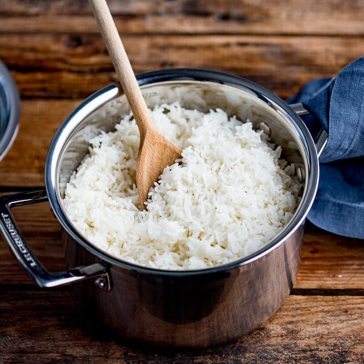

Rice

Pressure Cooked Rice
This recipe will show you how to make delciious pressure cooked rice.
Ingredient
Steps
Rinse 1 cup of rice in strainer until water running through is clear
Add 1 cup of rice to pressure cooker
Add 1 cup of water to pressuer cooker
Add 1 tbspb of oil
Set pressure cooker to cook for 5 mins
Once pressure cooker complete, enjoy!